El articulo revisa que ocurre en los primeros picosegundos despues de que una particula energetica golpea un material. Ese primer estado, llamado dano primario, define cuantas vacancias, intersticiales, atomos reemplazados, zonas amorfas o defectos topologicos quedan antes de que empiece la evolucion lenta por temperatura. La tesis fuerte es que el modelo clasico NRT-dpa es util como escala historica, pero no describe bien ni el dano sobreviviente ni la mezcla atomica real; por eso el paper propone usar arc-dpa para defectos sobrevivientes y rpa para reemplazos atomicos.
Pregunta Del Review
Para comparar materiales irradiados se suele hablar de dpa, desplazamientos por atomo. El problema es que "un desplazamiento calculado" no siempre equivale a "un defecto que queda". En una cascada, miles de atomos pueden moverse violentamente y despues recombinarse casi por completo. El review pregunta como representar mejor ese dano primario y como conectar simulaciones atomisticas, experimentos y modelos analiticos.
Tambien separa dos fenomenos que a veces se mezclan: la produccion de defectos cristalograficos, como pares Frenkel, y la mezcla por radiacion, donde atomos terminan en sitios cristalinos distintos sin dejar necesariamente una vacancia/intersticial visible.
Ideas Clave
1. El dano primario es ultrarrapido
La etapa balistica ocurre aproximadamente en 0,1-1 ps y la relajacion de la cascada en 1-10 ps. Despues vienen procesos termicamente activados que pueden durar desde nanosegundos hasta anos.
2. No existe un unico umbral perfecto
La energia umbral de desplazamiento depende de direccion, material, temperatura local, dinamica de muchos cuerpos y recombinacion. Una sola TDE promedio simplifica demasiado.
3. NRT-dpa sobreestima defectos
El modelo NRT cuenta desplazamientos esperados, pero ignora que muchos intersticiales y vacancias se recombinan durante la propia cascada. En metales suele sobreestimar el dano sobreviviente.
4. rpa captura mezcla atomica
La mezcla puede ser mucho mayor que el numero de defectos remanentes. Por eso el review distingue dano estructural sobreviviente, arc-dpa, de reemplazos atomicos, rpa.
Mapa De Modelos
| Concepto | Que mide | Problema | Uso recomendado |
|---|---|---|---|
| TDE | Energia minima para crear un desplazamiento estable en una condicion dada. | No es constante universal: cambia con direccion, relajacion atomica y recombinacion. | Parametro de entrada, no descripcion completa del dano. |
| NRT-dpa | Numero convencional de desplazamientos por atomo calculados desde energia de dano. | Sobreestima pares Frenkel sobrevivientes y subestima mezcla atomica. | Comparacion historica y regulatoria, con cautela. |
| arc-dpa | Dpa corregido por recombinacion atermica dentro de la cascada. | Depende de funciones ajustadas a simulaciones y datos disponibles. | Mejor estimador del dano primario sobreviviente en metales. |
| rpa | Reemplazos atomicos por atomo, relacionados con mezcla ionica. | No equivale a defectos remanentes; mide otra consecuencia fisica. | Cuantificar mezcla atomica y reordenamiento sin confundirlo con pares Frenkel. |
Figuras Explicadas
Las citas bajo cada figura corresponden a los captions extraidos del PDF. En las tres primeras imagenes no habia caption: parecen elementos graficos/editoriales de la primera pagina, por eso las incluyo al final de esta lectura como imagenes sin interpretacion cientifica central.

(a) Kinetic energy of atoms during a collision cascade
Esta imagen muestra una cascada de colisiones como una explosion atomica local: un PKA transfiere energia a vecinos, esos vecinos golpean a otros, y se forma una region caliente y desordenada. Lo importante no es solo cuantos atomos se mueven, sino que al principio casi todo el volumen parece perturbado. El mensaje fisico es que el dano primario no nace como defectos aislados y ordenados, sino como una fase breve, colectiva y fuertemente fuera de equilibrio.
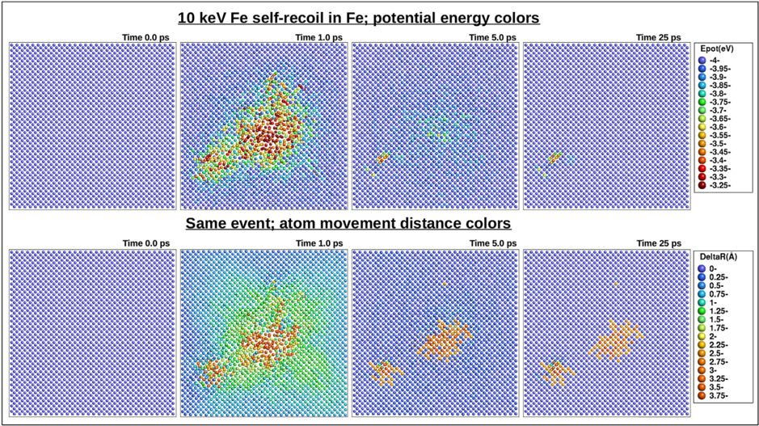
(b) Potential energy and displacement distance during a collision cascade
Complementa la figura anterior separando energia almacenada y desplazamiento. Muchos atomos alcanzan posiciones transitorias muy alejadas de su sitio original, pero eso no implica que todos terminen como defectos permanentes. La figura prepara la idea de recombinacion atermica: durante el enfriamiento de la cascada, vacancias e intersticiales pueden aniquilarse antes de que el material vuelva a una temperatura normal.
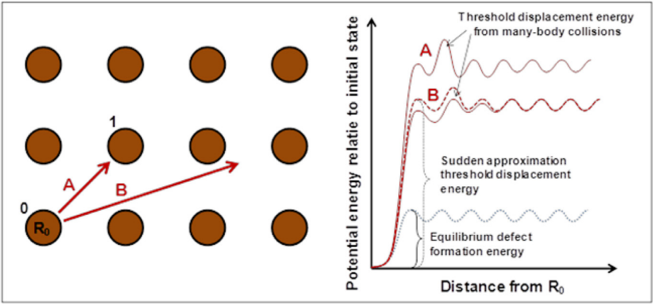
Illustration of the threshold displacement energy concept.
La figura explica la TDE, la energia minima para sacar un atomo de su sitio y dejar un defecto estable. La lectura central es que el umbral no es una barrera simple de una particula moviendose en linea recta. La red se relaja, los atomos vecinos tambien se mueven y la direccion del retroceso cambia el resultado. Por eso una TDE unica, por ejemplo 30 eV, es una aproximacion practica, no una propiedad microscopica completa.

Illustration of the damage function as a function of energy for Cu.
Esta grafica compara una funcion de dano realista con una funcion escalonada tipo NRT. La curva real no salta de cero a dano fijo en un unico umbral; crece de manera gradual y fluctuante. La figura es una critica visual a los modelos demasiado discretos: cerca del umbral, pequenas diferencias de energia y direccion pueden cambiar completamente si queda o no queda dano.
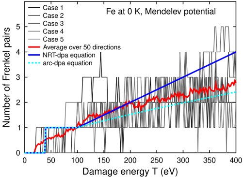
Illustration of the highly chaotic nature of damage production.
La figura muestra que incluso con condiciones muy controladas la produccion de dano fluctua mucho. Algunas trayectorias recombinan perfectamente aunque la energia sea relativamente alta. La curva promedio se parece mas a arc-dpa que a NRT-dpa, porque arc-dpa intenta incorporar la perdida de defectos por recombinacion. Es una de las figuras conceptuales mas importantes del paper: el dano primario es estadistico, no determinista.
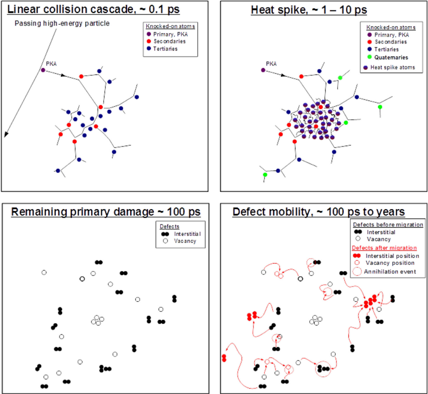
Schematic illustration of the time scales associated with an athermal collision cascade and subsequent thermal defect migration.
Ordena el fenomeno por tiempos: primero colisiones balisticas, luego una zona localmente caliente, despues enfriamiento y finalmente migracion termica de defectos. Esta separacion es clave porque los modelos de dano primario solo quieren describir el estado inmediatamente posterior a la cascada, antes de que diffusion, sinks, granos o superficies reorganicen la microestructura.
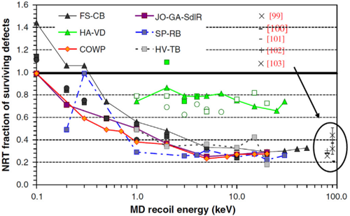
Comparison of surviving defect fraction in Fe obtained from MD simulations with different potentials and groups.
Resume un punto metodologico delicado: distintas simulaciones de dinamica molecular no dan exactamente el mismo numero de defectos sobrevivientes. Cambian los potenciales interatomicos, criterios de conteo, tamano de celda y tiempos de relajacion. Aun asi aparece una tendencia comun: la eficiencia de dano es menor que la prediccion NRT, especialmente cuando las cascadas se vuelven mas energeticas.

MD simulation of the damage evolution in a cascade induced by a 5 keV recoil in Si.
En silicio, la cascada produce una region excitada que evoluciona desde una nube caliente hasta un estado final estable en escala de MD. La figura ayuda a comparar metales y semiconductores: en semiconductores pueden aparecer zonas amorfas o desorden topologico, no solo pares Frenkel simples. Por eso un unico estimador de dpa puede esconder diferencias cualitativas entre clases de materiales.
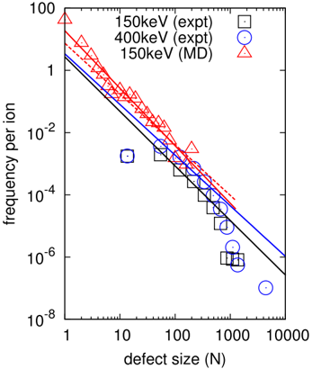
The frequency of defects as a function of defect size.
Compara predicciones MD con observaciones in situ en tungsteno irradiado. La distribucion de tamanos importa porque no basta contar "cuantos defectos" hay: un cluster grande, un lazo de dislocacion y muchos defectos puntuales aislados pueden tener efectos mecanicos muy distintos. La figura conecta el dano primario con la microestructura observable experimentalmente.
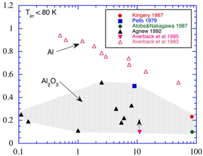
Surviving defect fractions in irradiated Al2O3 and Al.
Contrasta un material ionico, alumina, con un metal, aluminio. Sirve para mostrar que la recombinacion y estabilidad del dano no son universales: la estructura de enlace, carga, subredes y movilidad de defectos modifican la fraccion sobreviviente. Es una advertencia contra tomar parametros calibrados en metales y aplicarlos automaticamente a ceramicos o oxidos.
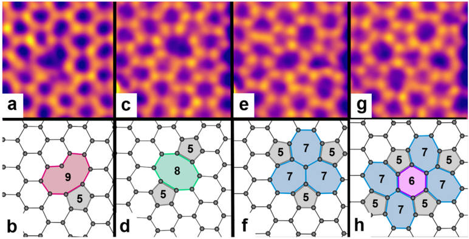
Different configurations of vacancies in a monolayer of graphene.
En grafeno, una vacancia no es solo un hueco: la red se reconstruye formando pentagonos, heptagonos, octagonos y enlaces reorganizados. La figura muestra por que en materiales de baja dimensionalidad y enlaces covalentes fuertes el dano primario debe describirse como topologia local, no solo como conteo de atomos desplazados.
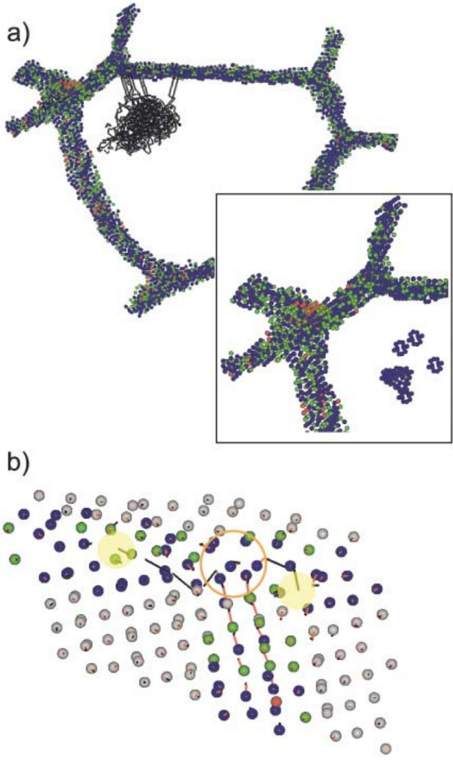
Molecular dynamics view of the mechanism of radiation damage reduction in nanocrystalline Ni.
Muestra como los bordes de grano pueden actuar como sumideros de intersticiales. En materiales nanocristalinos, las interfaces no son detalle secundario: cambian el balance de recombinacion y supervivencia de defectos. Esta figura explica por que la microestructura inicial puede hacer que dos materiales con la misma composicion acumulen dano de manera muy distinta.
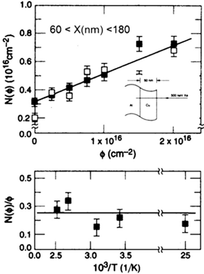
Recoil implantation of Cu into Al during 500 keV Xe bombardment.
Entra en el tema de mezcla por radiacion. El bombardeo con Xe empuja atomos de Cu hacia Al por retrocesos atomicos, generando mezcla sin que todo pueda entenderse como defectos sobrevivientes. Es un puente hacia el concepto rpa: la radiacion puede cambiar quien ocupa que sitio, incluso si la red final no conserva un par vacancia-intersticial por cada evento.
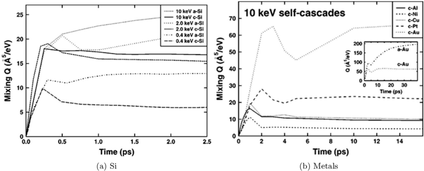
Time development of the ion beam mixing in crystalline and amorphous Si as well as several metals.
Compara como crece la mezcla con el tiempo o fluencia en materiales distintos. La diferencia entre silicio cristalino, silicio amorfo y metales indica que la mezcla depende de estructura, movilidad y canalizacion de energia. La figura refuerza que el dano por radiacion tiene al menos dos salidas medibles: defectos estructurales y reordenamiento quimico/posicional.
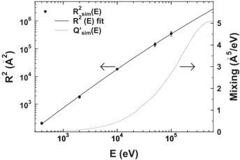
Simulated R2 values, fit of the function R2(E), and mixing Q0(E) for Ni.
Cuantifica la mezcla en funcion de energia para Ni. El ajuste permite pasar de observaciones/simulaciones atomisticas a una funcion analitica util. La linea de mezcla no debe leerse como dpa: esta midiendo distancias y reemplazos, por eso alimenta mejor el concepto de rpa que el de pares Frenkel sobrevivientes.

Experimental and simulation data showing quantitatively the problem with the NRT-dpa equation.
Es una figura de diagnostico: NRT-dpa sobreestima los pares Frenkel producidos aproximadamente por un factor de 3, pero subestima los atomos reemplazados aproximadamente por un factor de 30. En otras palabras, NRT falla en dos direcciones distintas segun lo que se quiera medir. Por eso el paper propone separar dano sobreviviente y mezcla atomica en dos estimadores complementarios.
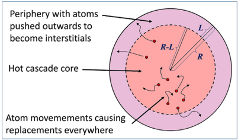
Schematic of the concepts and quantities used in deriving the new arc-dpa and rpa equations.
Esta figura organiza las magnitudes: energia transferida, energia disponible para dano, defectos que sobreviven y atomos que cambian de posicion. Es el mapa conceptual de la propuesta del review. arc-dpa corrige NRT para contar mejor el dano remanente; rpa describe cuantos atomos fueron reemplazados, una variable relevante para mezcla ionica y cambios de composicion local.
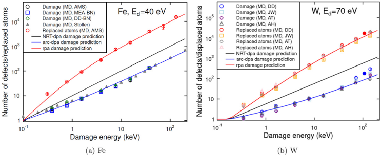
Illustration of the improvement obtained with the new arc-dpa and rpa equations for Fe and W.
Compara las nuevas ecuaciones con datos para Fe y W. La mejora consiste en que arc-dpa baja la prediccion de dano a niveles mas compatibles con defectos sobrevivientes, mientras que rpa puede representar la cantidad mucho mayor de reemplazos. La figura no dice que el problema este resuelto para todos los materiales, sino que separar variables produce una descripcion mas honesta.
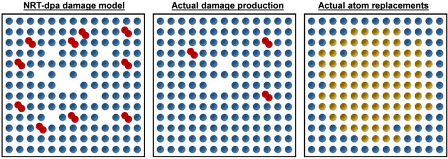
Schematic illustration of the damage predicted by the three different damage models.
Probablemente la figura mas pedagogica del review: a la izquierda, NRT imagina muchos pares vacancia-intersticial; al centro, arc-dpa muestra menos defectos remanentes; a la derecha, rpa muestra muchos atomos en sitios reemplazados. Asi se ve por que "dano" y "mezcla" no son sinonimos. Un material puede tener pocos defectos sobrevivientes pero mucha reconfiguracion atomica.
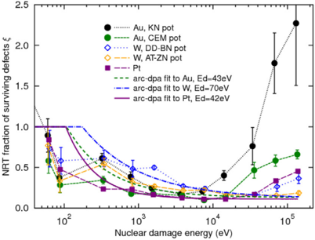
Average numbers of defects from cascades in Au, Pt and W, as a function of PKA energy.
Extiende la comparacion a Au, Pt y W usando eficiencia NRT, es decir, defectos observados divididos por lo que predeciria NRT. Al aumentar la energia, la eficiencia no permanece en 1: cae porque las cascadas densas favorecen recombinacion interna. La curva de arc-dpa intenta capturar precisamente esa caida material-dependiente.
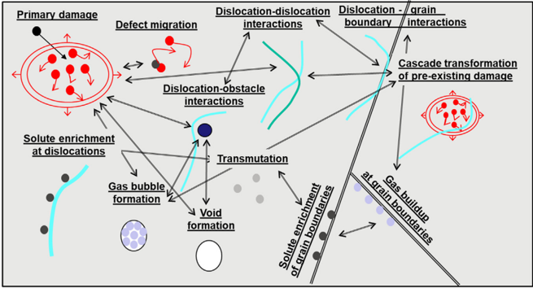
Some damage buildup processes that may occur in metals after the primary damage state formation.
Marca el limite del tema principal. Despues del dano primario, los defectos pueden migrar, agruparse, formar lazos de dislocacion, vacios, segregacion o interactuar con sinks. Esto significa que arc-dpa describe un estado inicial mejorado, pero no predice por si solo toda la degradacion a largo plazo. Para eso hacen falta modelos de evolucion microestructural.
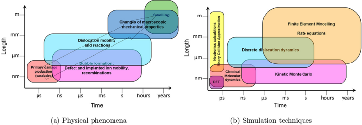
a) Multiple scales of physical phenomena b) Multiscale modeling to address this.
Cierra el argumento con una vision multiescala. MD captura picosegundos y nanometros; experimentos y servicio nuclear involucran segundos-anos y microestructuras grandes. El camino propuesto es encadenar modelos: cascadas atomisticas para dano primario, modelos cineticos para evolucion de defectos y modelos continuos para propiedades macroscopicas.
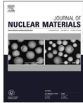
Sin caption extraido.
Elemento grafico de la primera pagina extraido por el pipeline. No parece corresponder a una figura cientifica numerada del articulo, asi que no lo uso para interpretar resultados.
Sin caption extraido.
Otro elemento sin caption de la portada. Se conserva en el resumen para que el conjunto de imagenes extraidas quede completo, pero no forma parte del argumento tecnico.
Sin caption extraido.
Imagen pequena sin caption detectada en la pagina inicial. Igual que las dos anteriores, la incluyo como salida del extractor pero la excluyo de las conclusiones cientificas.
Modelo Mental
Impacto inicial: una particula energetica genera un PKA y una cascada de colisiones. En ese instante muchisimos atomos se desplazan, pero el sistema aun no decidio cuantos defectos quedaran.
Recombinacion atermica: durante el enfriamiento local, muchos pares vacancia-intersticial se recombinan sin necesitar difusion termica lenta. Aqui NRT-dpa tiende a contar de mas.
Estado primario: quedan algunos defectos sobrevivientes y muchos atomos pueden haber intercambiado posiciones. arc-dpa estima mejor lo primero; rpa estima lo segundo.
Evolucion posterior: desde ese estado inicial empiezan migracion, clustering, interaccion con bordes de grano, superficies, dislocaciones y cambios macroscopicos.
Limitaciones
El review insiste en que ningun modelo dpa puede reemplazar a una descripcion completa de microestructura y propiedades. Las simulaciones MD estan limitadas por potenciales interatomicos, tamanos de celda y tiempos muy cortos; las ecuaciones analiticas necesitan promedios y ajustes; y la respuesta real depende de temperatura, composicion, defectos preexistentes, interfaces y fluencia. La mejora no es tener un numero magico, sino usar el numero correcto para la pregunta correcta.
Resumen Final
Nordlund et al. proponen ordenar el dano por radiacion desde su origen: primero entender la cascada atomistica, luego distinguir defectos que sobreviven de atomos que fueron reemplazados, y finalmente conectar ese estado primario con la evolucion multiescala. La conclusion practica es clara: NRT-dpa sigue siendo una referencia historica, pero para interpretar dano primario moderno conviene usar arc-dpa para produccion de defectos y rpa para mezcla atomica. Esa separacion evita comparar fenomenos distintos con una sola etiqueta.
Archivo HTML generado desde el PDF local y las figuras ya extraidas en pappers/ilove-Nordlund.2018_figures.